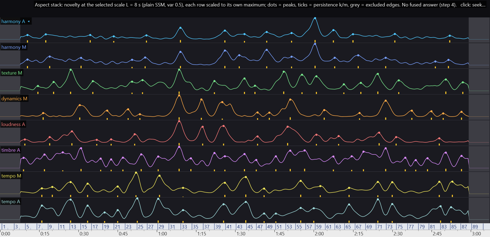
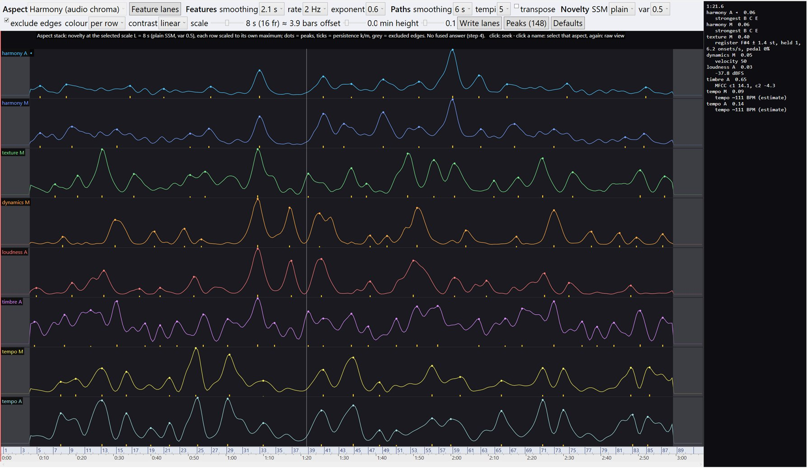

Aspect stack
The question: something changes here. Is it the harmony, the sound, the loudness, the tempo?
One row per aspect. Each row is the same curve you know from the novelty view, at the selected scale, for a different aspect. All rows share the time axis.

12345678- Aspect name in the row's colour. M means from the MIDI, A from the audio. The small ◂ marks the selected aspect; click a name to select it, again for its raw view.
- 1:09, the middle part. Look straight down from here: texture, dynamics, loudness and timbre all have their highest peak here; harmony has one too.
- 2:00, the reprise. Harmony has its highest peak; dynamics and timbre have none.
- Dots: the peaks of that row.
- Yellow ticks: the persistence of each peak, as in the novelty view.
- Grey shading: the excluded edges. The curve there is not data.
- A trap. Texture has another peak, about as high, at 0:27. High in one row alone is a local event, not a section.
- Tempo goes its own way here: its highest peaks (0:52, 1:01) match no section boundary.
How to read it
- Look for moments where several rows peak together. Those are boundaries you will probably hear.
- Then read which rows. At 1:09 the sound changes. At 2:00 the harmony returns home. The two boundaries are of different kinds, and the stack says so.
- Look for a row that disagrees with the rest. It may be noise (tempo often is), or a fact (a return in a new texture).
Nothing is combined for you yet: the legend says "No fused answer". Combining the rows into one list of sections is a later step.
Hover

| Looks like | What it is | How to read and use it |
|---|---|---|
| Coloured curves | Novelty of one aspect at the selected scale. Each row is scaled to its own maximum: a tall peak in one row and a tall peak in another are not equally strong. | |
| Dots in the row's colour | Peaks: boundary candidates. Click near one to jump there. | |
| Yellow ticks under a row | Persistence k/m. | |
| Grey shading at both ends | Excluded edges. | |
| Pale vertical line | Where the mouse is. | |
| Dark horizontal lines | They only separate the rows. |
Read more
- Paulus, Müller and Klapuri, Audio-based music structure analysis, ISMIR 2010 (PDF): repetition, novelty and homogeneity side by side
- FMP C4S1: general principles of music structure: repetition, homogeneity, novelty
- Nieto, Mysore, Wang and Smith, Audio-based music structure analysis: current trends, open challenges, and applications, TISMIR 2020